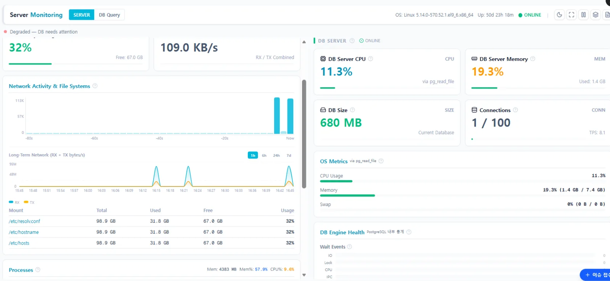

DB 구조를 그리고
AI에게 묻습니다
인터랙티브 ERD 뷰어와 AI 분석이 결합된 스키마 탐색 도구입니다. 복잡한 테이블 관계를 시각화하고, 선택한 테이블을 맥락으로 AI와 대화하며 DB 구조를 이해합니다.

기능
DB에 연결하면 스키마를 읽어 자동으로 그립니다. 그 다음은 보고, 묻고, 추적하는 일입니다.
ERD 뷰어
테이블을 도메인별로 자동 클러스터링하고 FK 관계를 선으로 잇습니다. 드래그로 배치를 조정하고, 클릭으로 PK·FK·타입 등 컬럼 상세를 봅니다. 스키마가 바뀌면 즉시 반영됩니다.
AI 분석
선택한 테이블의 컨텍스트를 자동으로 넣어 AI에게 묻습니다. 관계 설명, 컬럼 용도, 설계 의도, 인덱스 추천을 포함한 쿼리 최적화 제안, 멀티 테이블 JOIN 경로 생성. 대화 이력은 팀과 공유합니다.
FK 경로 탐색
시작 테이블에서 목표 테이블까지 FK 경로를 BFS로 탐색하고 복수 경로를 모두 보여 줍니다. 선택한 경로의 JOIN 쿼리를 자동 생성하고, 순환 참조를 감지해 경고합니다.
스냅샷
릴리즈·마이그레이션 기준으로 스키마 상태를 저장하고 버전 간 추가·삭제·변경 컬럼을 비교합니다. CI 파이프라인과 연동한 자동 스냅샷을 지원합니다.
DDL 확인
테이블을 클릭하면 CREATE TABLE 구문을 신택스 하이라이팅과 함께 보여 줍니다. 원클릭 복사, 다중 테이블 일괄 내보내기, 스냅샷 간 DDL diff, NF1 표준 감사 컬럼 자동 검증.
어디에 쓰나
레거시 시스템 분석, 재구축 설계, 신규 투입 인력의 온보딩, 데이터 표준화 점검. ISMP 현행 분석 단계에서도 씁니다.
FK 경로에서 JOIN 쿼리까지
주문에서 컨테이너까지 어떻게 이어지는지 묻는 일은 레거시 분석에서 매일 생깁니다. SQX ERD는 최단 경로와 대안 경로를 찾아 주고, 그 경로대로 JOIN 쿼리를 만들어 바로 복사하게 합니다.
- 최단 경로와 대안 경로를 홉 수와 함께 표시
- 경로 저장과 팀 공유
- 생성된 쿼리는 그대로 실행 가능
운영 중인 DB로 바로 시연합니다
읽기 전용 접속만 있으면 됩니다. 대표메일로 요청해 주세요.